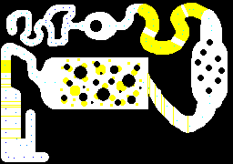

Five game jams: Lessons learned
Game design and game dev are about creating miniature worlds. I love this! I enjoy learning the rules of someone else's world. And I enjoy crafting rules for my own worlds. It's a blast!
My day job is as a machine learning researcher, so it's not a given that I would ever actually get around to making any games. But for five of the last six years, I've participated in the GitHub Game Off game jam, held each November, making small web games and having a whale of a time.
This post is a reflection on these games and lessons learnt. I'll start with what my goals are. Primarily, it is to have fun myself, and to make sure I finish something, for once. Of course, I'd rather a handful of people played them and had some fun too!
Here are my top lessons, all somewhat personal, not necessarily universal:
- Make a game with satisfying challenges during development. This is why I'm doing it, after all. It'll likely mean a better game too, as I lean in to my interests.
- Aim for satisfying moments for the player. "Fun" can be nebulous or hard to get a handle on. "Satisfying moments" is easier & a great goal for a game jam.
- Do something every day to improve the game, however little. Deadlines and milestones are daunting. This rule is achievable and ridiculously effective.
- Make a tutorial. Just do it. Don't be lazy. Of course the game already makes sense to me (I created it) — that proves nothing.
Now, for a brief retrospective on each game & lessons learnt.
Kadigan (RTS, 2020)
Kadigan was my first foray into game jams, and so I chose my long-time favourite genre of real-time strategy (RTS).
The idea was to make a very simple RTS, with just a single unit type, and a slider that controls investment vs unit creation. The main innovation was to make the map dynamic, slowly shifting as moons orbit planets. Developing Kadigan reminded me that RTS is an inherently complex beast: unit AI, UI for selection and commands, resources, map navigation and fog of war — it all adds up!
- The good: Unit control and micro with momentum is fun.
- The bad: Needs a tutorial. Resource management is very opaque.
- The lesson: Keep making games!
FAD (Audio Exploration, 2021)
FAD is an unusual game where you have to navigate an undersea world without seeing anything, instead learning to use your ears to echolocate.

It's certainly the most innovative game on this list. I was semi-obsessed with the idea that constraints drive innovation. So I decided right at the beginning of the jam to give myself a pretty tough constraint: draw nothing on the screen during the game.
The key challenge was usable echolocation. So I spent lots of development time trying to get the right tone and delays on an audio effect so that you could tell whether you're about to hit something, and whether you should turn left or right to avoid it. I very nearly gave up on this. Since it was quite involved, I wrote a blog about this bit afterwards.
This was also the first time I used a level design trick that I kept coming back to, which is to use GIMP (or Paint) as a level editor. With a grid-like map, I assign meaning to the various codes 0xaarrggbb, and create a map that looks like this:

In the FAD level language, black is a wall, blue and cyan dots are navigation beacons, and yellow regions are interference areas where the guidance system stops working. A Python script turned images like this into some JSON that the game itself could handle.
- The good: Different, oh so different.
- The bad: Doesn't give you much back, as a player (e.g. would have been a massive improvement to show a video of the player looking silly & bumping into everything, at the end of each level!)
- The lesson: Crazy constraints can be a good thing!
TINY (Physics, 2023)
TINY is a lunar-lander-like physics game, where you fly in formation with friendly AIs and drop things on factories.

The core of this game was supposed to be training an imitation learning (AI) agent to mimic your flying style, then watch with pride as it defeats enemies on your behalf. However, training an agent quickly and on such a small amount of data proved challenging, and just three days before the deadline, I gave up on this idea. I reused the pieces, with friendly AIs controlled by a "script agent" that was previously used for testing.
Continuing the pattern of self-imposed constraints, I limited myself to a greyscale palette. Although the results are OK, the only bit that stands up to scrutiny is the ship's thrusters. I blame my skill level and time budget (which was burnt by the attempt at deep learning), not the greyscale palette!
Despite missing what was meant to be the key ingredient, it ended up being quite fun to fly around the terrain, flinging bombs and ducking behind cover. Then, finally, to get a swarm of AI companions carpet-bombing the enemy position.
- The good: Fun. Player mastery/self-improvement.
- The bad: Graphics and sound are basic.
- The lesson: Find something satisfying (both for the player and for yourself as a developer)!
C-Crits (Programming, 2024)
C-Crits has a minuscule target market: those who want to learn a new assembly-like language, for fun, in order to play a short web game where your creatures run around a map following your code, blowing up enemies and capturing objectives.

My logic went like this. Who is going to play my game? Other game jam participants. What do they like to do? Programming (in order to make games). So... let's make a programming game! In retrospect, I freely admit that this was off the mark.
C-crits was fun to make. But, as with Kadigan, the scope required was daunting. I wanted/needed a language, interpreter, editor with syntax highlighting, language reference and debugger. The game would also need a proper tutorial to have any chance of being playable.
There was an opt-in game jam challenge to use a 4-colour palette. This led me down the rabbit hole of textures of strictly screen-aligned pixels comprising four colours, and hash texturing, which I wrote up in a blog post. I particularly enjoyed making the unit / base explosions using these concepts.
Most importantly, I used the "baby steps" rule for C-crits. Each day, I would do something, however small, to improve the game. I wasn't going to beat myself up about not spending hours — if I could only manage a few minutes, so be it, but I would try my best to do something. This seems to work very well for me, as it's that barrier to getting started, or just feeling overwhelmed, that can stop me from making any progress at all.
- The good: Fun to make. Quite proud of this one, technically.
- The bad: Not hugely satisfying to play.
- The lesson: Be ambitious! Improve the game a little every day.
Patternats (Puzzle Roguelike, 2025)
Patternats was this year's attempt. It was born out of my love of puzzle roguelikes on mobile, such as Slice & Dice, Balatro, and Luck be a Landlord. In Patternats, you swap cells on a grid to make increasingly powerful patterns to reduce entropy.
Patternats feels like the most standard and the least ambitious game of the bunch. Going into it, I wasn't sure how roguelikes should be balanced (to the extent that they need to be), and how it's possible to have a vast library of items without code complexity exploding.
In the end, these problems weren't too troublesome, although the difficulty curves are certainly a bit off, and there's not much sense of balance. My biggest problem was self-inflicted: using a low-level library for graphics, without any good reason for doing so.
I'm generally keen on using the lowest abstraction layer that is feasible for a given problem, so that I can understand what's going on, and the additional abstraction layers don't get in my way. For this game, however, pure HTML + CSS would have been fine, capable of looking identical to what I got using Three.js, a thin wrapper around WebGL. I didn't really enjoy positioning each button, coding up enabled/clicked states, etc (although I'm not 100% sure I'd have preferred CSS layouts).
- The good: Feels relatively complete as a game. Just swapping cells gives surprising gameplay depth.
- The bad: Some bugs on submission. Missing tutorial.
- The lesson: Use an appropriate tech stack. Make games that have programming problems that you enjoy!
Conclusions
Looking back over these five games, I'm pleased to see they're quite varied in gameplay. They're generally also quite hard to play, not overly accessible or forgiving. I'm OK with this, too. There is some progression towards games that feel more complete. Sometimes my stubborn refusal to use a proper game engine hurts the end result. And I've never really managed to complete everything I wanted to: skimping on tutorial, release materials, graphics, or something important.
Anyhow, I've learnt a few helpful lessons (top of page) and had a lot of fun. I'm certainly up to try for another five games!
Appendix
Some stats on the games.
| Year | Game | Genre | Favourite (dev) bits | Key libraries | Loc |
|---|---|---|---|---|---|
| 2020 | Kadigan (repo) | RTS | AI, Physics, Fog of War | Phaser | 3,000 |
| 2021 | FAD (repo) | Audio / Exploration | Sonar Audio FX (blog) | Web Audio | 1,700 |
| 2023 | TINY (repo) | Physics | AI, Physics, Level design | Phaser | 2,500 |
| 2024 | C-crits (repo) | Programming | Programming language, procedural textures (blog) | Three.js, Prism editor | 4,700 |
| 2025 | Patternats (repo) | Puzzle Roguelike | Item design | Three.js | 4,100 |